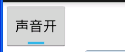
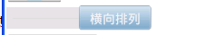

本節の導入：
この節で紹介するAndroidの基本UIコンポーネントは、スイッチボタンToggleButtonとスイッチSwitchです。この2つのコンポーネントには馴染みがないかもしれません。ふと思い出したのは、筆者の最初の外注先の会社では、Wi-Fi接続をオン/オフするスイッチに、なんとTextViewを使っていたのです。そしてデザイナーに切り替え前後の2枚の画像を描かせ、コードで設定していました。もちろんTextViewをクリックしたときに状態を判定し、対応する背景を設定していました...
まあ、呆れてものも言えませんね。まあ...この節で説明する2つは、実はどちらもスイッチコンポーネントですが、後者（Switch）はAndroid 4.0以降でないと使用できません。そのため、AndroidManifest.xmlファイル内のminsdkは14以上にする必要があります。そうしないとエラーになります。まず、この2つのコントロールがどんな見た目かを確認しましょう。Android 5.0以降、この2つのコントロールは以前よりずっと見た目が良くなりました。まず5.0より前の様子を見てみましょう。
5.0より前のToggleButtonとSwitch：


5.0バージョン：
まあ、鮮明な対比ですね...それでは、この2つのコントロールの使い方を学んでいきましょう。実は、この2つの使い方はほぼ同じです。
始める前に、公式APIを貼っておきます：Switch；ToggleButton
1. コア属性の説明：
1）ToggleButton（トグルボタン）
設定できる属性は次のとおりです：
- android:disabledAlpha：ボタンが無効のときの透明度を設定します
- android:textOff：ボタンがオフ（未選択）のときに表示されるテキスト
- android:textOn：ボタンがオン（選択）のときに表示されるテキスト
2) Switch（スイッチ）
2) Switch（スイッチ）
- android:showText：設定できる属性は次のとおりです：
- android:splitTrack：オン/オフのときに文字を表示するかどうかを設定（boolean）
- android:switchMinWidth：スライダーと下部の画像を分離するための隙間を設定するかどうか（boolean）
- android:switchPadding：スイッチの最小幅を設定します
- android:switchTextAppearance：スライダー内のテキストの間隔を設定します
- android:textOff：スイッチのテキストの外観を設定しますが、今のところ何の役に立つのかは分かりません...
- android:textOn：ボタンがオフ（未選択）のときに表示されるテキスト
- android:textStyle：ボタンがオン（選択）のときに表示されるテキスト
- android:track：テキストスタイル。太字、斜体、下線など
- android:thumb：下部の画像（トラック）
- android:typeface：スライダー（サム）の画像*.ttfフォントを設定。デフォルトでは sans, serif, monospace の3つをサポートしています。これ以外にもフォントファイルを使用できます（Typeface typeFace =Typeface.createFromAsset(getAssets(),"fonts/HandmadeTypewriter.ttf"); textView.setTypeface(typeFace);
2. 使用例：
2. 使用例：
比較的簡単なので、まとめて書きます。さらに、Switchにスライダーと下部の画像（トラック）を設定して、iOS 7のスライダーに似た効果を実現します。ただし欠点として、XMLではスライダーと下部の画像のサイズを設定できません。つまり、素材の大きさがそのままSwitchの大きさになります。JavaでDrawableオブジェクトを取得し、サイズを変更することができます。簡単な例：

実行結果画像：実装コード：thumb_selctor.xml:
<?xml version="1.0" encoding="utf-8"?>
<selector xmlns:android="http://schemas.android.com/apk/res/android">
<item android:state_pressed="true" android:drawable="@drawable/switch_btn_pressed"/>
<item android:state_pressed="false" android:drawable="@drawable/switch_btn_normal"/>
</selector>
track_selctor.xml:
<?xml version="1.0" encoding="utf-8"?>
<selector xmlns:android="http://schemas.android.com/apk/res/android">
<item android:state_checked="true" android:drawable="@drawable/switch_btn_bg_green"/>
<item android:state_checked="false" android:drawable="@drawable/switch_btn_bg_white"/>
</selector>
最初に2つのdrawableファイル：
<LinearLayout xmlns:android="http://schemas.android.com/apk/res/android"
xmlns:tools="http://schemas.android.com/tools"
android:layout_width="match_parent"
android:layout_height="match_parent"
android:orientation="vertical"
tools:context=".MainActivity">
<ToggleButton
android:id="@+id/tbtn_open"
android:layout_width="wrap_content"
android:layout_height="wrap_content"
android:checked="true"
android:textOff="关闭声音"
android:textOn="打开声音" />
<Switch
android:id="@+id/swh_status"
android:layout_width="wrap_content"
android:layout_height="wrap_content"
android:textOff=""
android:textOn=""
android:thumb="@drawable/thumb_selctor"
android:track="@drawable/track_selctor" />
</LinearLayout>
MainActivity.java：
public class MainActivity extends AppCompatActivity implements CompoundButton.OnCheckedChangeListener{
private ToggleButton tbtn_open;
private Switch swh_status;
@Override
protected void onCreate(Bundle savedInstanceState) {
super.onCreate(savedInstanceState);
setContentView(R.layout.activity_main);
tbtn_open = (ToggleButton) findViewById(R.id.tbtn_open);
swh_status = (Switch) findViewById(R.id.swh_status);
tbtn_open.setOnCheckedChangeListener(this);
swh_status.setOnCheckedChangeListener(this);
}
@Override
public void onCheckedChanged(CompoundButton compoundButton, boolean b) {
switch (compoundButton.getId()){
case R.id.tbtn_open:
if(compoundButton.isChecked()) Toast.makeText(this,"打开声音",Toast.LENGTH_SHORT).show();
else Toast.makeText(this,"打开声音",Toast.LENGTH_SHORT).show();
break;
case R.id.swh_status:
if(compoundButton.isChecked()) Toast.makeText(this,"开关:ON",Toast.LENGTH_SHORT).show();
else Toast.makeText(this,"开关:OFF",Toast.LENGTH_SHORT).show();
break;
}
}
}